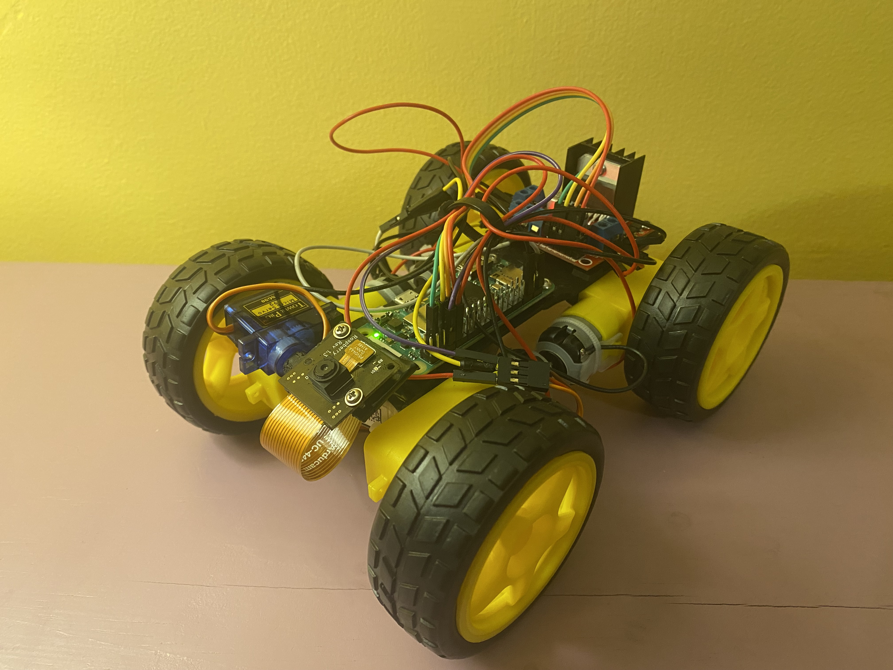
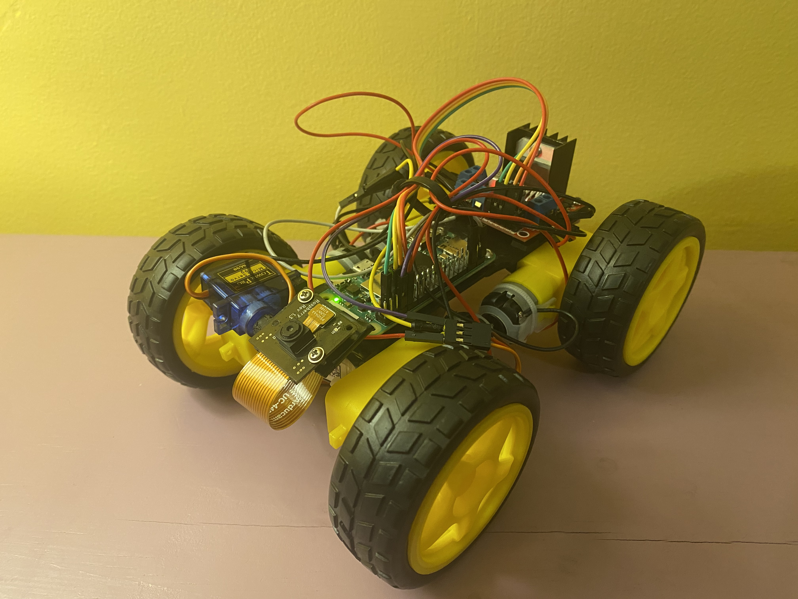

Raspberry Pi RC Car
I started this project because I already had many of the components on hand and thought it would be both fun and educational. It brought together several topics I am interested in, including battery power management, Raspberry Pi development, electrical motors, and computer networking.
Design & Hardware
 

The car is built around a Raspberry Pi Zero 2 W, which controls four small DC motors through an L298N motor driver. I chose the L298N primarily because I already had it, but it also worked well for this project since it can function as a buck converter. This allowed me to power both the motors and the Raspberry Pi from the same battery across a range of input voltages.
Camera & Control
I attached a Raspberry Pi Camera module to a servo motor, allowing the camera to tilt up and down. The camera connects to the Pi Zero 2 W through the CSI port using a ribbon cable that is much longer than necessary, something I plan to fix in the future. Mounting the camera on a servo added an extra level of control and made exploring the environment more engaging.
One of the most interesting parts of this project was the networking and software side. Using Flask, Picamera2, and OpenCV, I built a simple web application that streams the camera feed and allows the car to be driven remotely. Because the Pi Zero 2 W has built in WiFi, I could connect to the car from anywhere and drive it around my house with fairly low latency.
Reflection
Overall, this project was extremely enjoyable and rewarding. It combined many of my interests Raspberry Pi development, web programming, battery powered systems, and electric motors into a single, functional project. Seeing all of these components work together in a finished system was especially satisfying.